Глава 7 Списки list
⏱️ Час на опанування теми: 45 хвилин
🤷 Для чого ми це вивчаємо:
- ефективно зберігати пов’язані між собою дані у списках
- опанувати найуніверсальніший контейнер у Python
🔑 Результати навчання:
- розуміти що таке списки та де вони використовуються
- створювати списки
- додавати, видаляти, змінювати та отримувати елементи зі списку
- перевіряти чи міститься елемент у списку
- з’єднувати та повторювати списки
- рахувати кількість елементів у списку
- знаходити максимальний та мінімальний елемент списку
- сортувати та змінювати порядок елементів на зворотній
У цій главі, ми вивчимо чи не найважливіший ❗️ контейнер 🇬🇧 container у Python – список 🇬🇧 list list. Під контейнерами або структурами даних 🇬🇧 data structures ми будемо розуміти типи об’єктів, які дозволяють зберігати сукупність інших об’єктів. Спочатку ми подивимось 👀 на те, а навіщо нам взагалі структури даних. Потім ми розглянемо практичну частину – як створювати та взаємодіяти зі списками та їх елементами.
Ця тема – не проста. Це абсолютно нормально, якщо вам треба зробити кілька підходів, щоб опанувати списки. Порада: якщо ви застрягли на якомусь розділі, краще його пропустити і повернутись трохи згодом.
7.1 🤔 Розбираємось навіщо нам списки
Ви пам’ятаєте хто входив у склад Вартових Галактики 🇬🇧 Guardians of the Galaxy 🌌? Якщо ні, не проблема: це були Зоряний Лицар 🇬🇧 Star-Lord , Ґамора 🇬🇧 Gamora , Дракс 🇬🇧 Drax , Ракета 🇬🇧 Rocket та Ґрут 🇬🇧 Groot . Відтепер ми будемо використовувати англійску версію 🇬🇧 їх імен. Ми вже знаємо як створювати змінні текстових стрічок str, і якщо нам знадобиться використати імена героїв у коді, ми можемо створити окремі змінні для кожного з них:
guardian1 = "Star Lord"
guardian2 = "Gamora"
guardian3 = "Drax"
guardian4 = "Rocket"
guardian5 = "Groot"Якщо нам треба буде вивести на екран 🖥️ імена усіх вартових, то нам потрібно буде прописати ✍️ кожну змінну:
print(guardian1)## Star Lordprint(guardian2)## Gamoraprint(guardian3)## Draxprint(guardian3)## Draxprint(guardian5)## GrootЦе не дуже зручно, тим паче що ми зробили помилку 😬 і два рази вивели Drax замість Rocket. Тобто ми написали другий раз print(guardian3), замість print(guardian4). Rocket 🦝 це точно б не сподобалось. А уявіть скільки треба буде писати, коли до вартових ще приєднати Yondu, Mantis, Nebula, Thor та Kraglin Obfonteri? Це вже десять членів, і нам треба буде писати щоразу десять рядків коду, якщо захочемо вивести їх імена на екран.
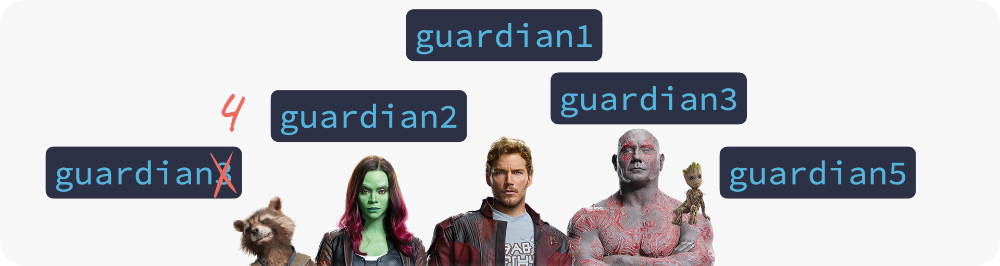
На щастя, у Python існує тип об’єкта, який називається list, що з анлійської 🇬🇧 перекладається як список. Під списком ми розуміємо впорядковану послідовність об’єктів, які ми будемо називати елементами 🇬🇧 elements . Простими словами, список – це ланцюжок з елементів. Такі елементи можуть бути будь-чим – числами int, стрічками str або навіть іншими списками list. І також list дозволяє зберігати скільки завгодно однакових елементів.

Списки list можуть мати будь-яку довжину 🐛. Ми зможемо змінювати їх елементи, додавати та видаляти елементи. Для нас буде дуже важливий порядок цих елементів, тому що доступ до елементів реалізований через їх порядковий номер.
Використовуються списки list зазвичай для переліків та списків. Наприклад, імена членів вашої родини 👨👩👧👦, назви країн які входять до Європейського союзу 🇪🇺, роки випуску платівок The Beatles 🪲, ваш to-do список на сьогодні ✅ тощо. З іншого боку, нас ніхто не обмежує додати до списку будь-яку не пов’язану між собою інформацію.
7.2 ⛓️ Створюємо списки
Найпростіший спосіб створення списку list – це прописати його елементи через кому , і “загорнути” у квадратні дужки [ та ]. Давайте створимо новий list з ім’ям guardians:
guardians = ["Star Lord", "Gamora", "Drax", "Rocket", "Groot"]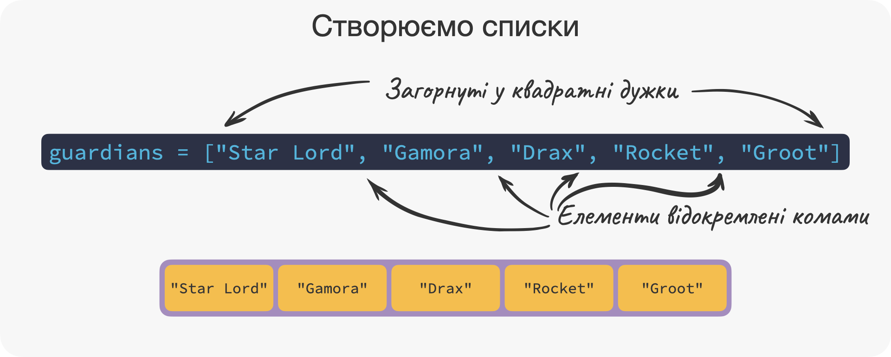
Тепер нам буде набагато простіше вивести імена на екран 🖥️:
guardians## ['Star Lord', 'Gamora', 'Drax', 'Rocket', 'Groot']Не забувайте, що ми також можемо замість конкретних значень зазначити також змінні або вирази:
guardians = [guardian1, guardian2, guardian3, guardian4, guardian5]Давайте ще створимо list, який буде містити абсолютно довільні 🤪 значення:
star_lord = ["Peter Jason Quill", 1976, 2023 - 1976, 1.88, True]
star_lord## ['Peter Jason Quill', 1976, 47, 1.88, True]Список star_lord містить елемент типу str зі значенням "Peter Jason Quill", елемент типу int зі значенням 1976, вираз 2023 - 1976 який поверне об’єкт з типом int, елемент типу float зі значенням 1.88 та елемент типу bool зі значенням True.
А ще ми казали, що елементами списків, можуть бути інші списки. Давайте створимо список, перший елемент якого буде також список:
drax = [["Drax", "Drax the Destroyer"], 1973]
drax## [['Drax', 'Drax the Destroyer'], 1973]Перший елемент списку drax – список, який містить його повне та скорочене ім’я. Другий елемет – дата його дебюту в коміксах Marvel.
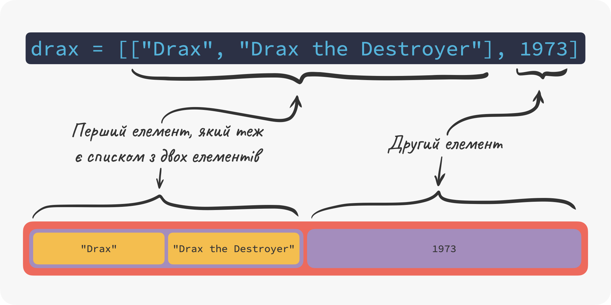
7.3 📌 Працюємо з елементами
Друкувати усі елементи – це звичайно зручно, але нам буде ще потрібен механізм ⚙️ доступу до елементів. Іншими словами, як ми можемо роздрукувати чи замінити той чи інший елемент? Цей механізм реалізовано за допомогою індексації 🇬🇧 indexing . Кожен елемент списку має свій індекс 🇬🇧 index , за яким ми можемо його отримати. Такий собі порядковий номер.
Ви можете собі уявити це – як чергу в магазині 🏪. Ви не знаєте як кого звуть, але у кожного члена цієї черги є ім’я. Ви можете спитати яке ім’я у першого, хто стоїть у черзі, або, наприклад в останнього. Звичайно це буде трохи не зручно, і в реальному житті це ніхто робити не буде, але це дуже яскрава ⭐️ метафора яка пояснює ідею індексації.
Індексація у Python починається з нуля. Це означає що перший елемент має індекс 0, другий – 1, і так далі. Іншими словами, n-ий елемент має індекс n - 1.
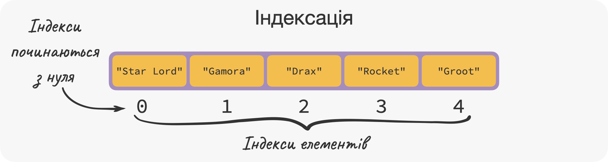
7.3.1 Отримуємо елемент за його індексом
Для того, щоб отримати значення якогось елемента у списку, нам треба спершу написати ім’я цього списку, а потім його індекс у квадратних дужках (тобто [ та ]). Давайте отримаємо значення найпершого елементу (індекс 0):
guardians[0]## 'Star Lord'А тепер давайте отримаємо четвертий елемент (індекс 3):
guardians[3]## 'Rocket'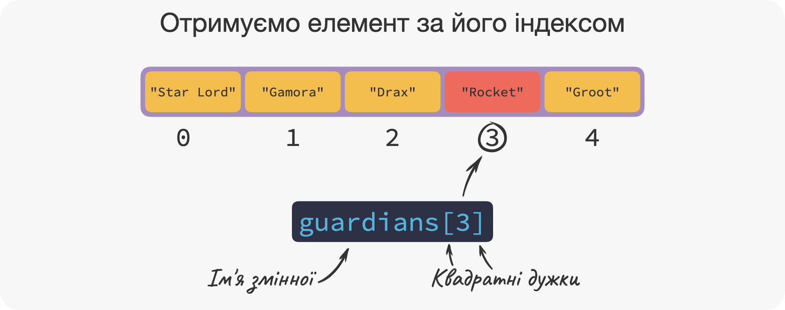
Більш того, ми навіть можемо зазначати від’ємні індекси. Це дуже корисна штука, але щоб вас не заплутати, ми винесли цю тему у Додаток E.
7.3.2 Змінюємо елемент за його індексом
Ми також можемо змінювати елементи у списку. Для цього нам треба зазначити ім’я списку, індекс “загорнутий” у квадратні дужки, знак присвоєння (тобто дорівнює =) і саме значення чи вираз:
guardians[3] = "Raccoon"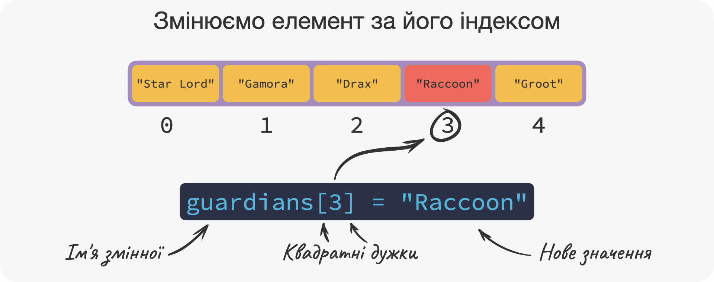
Окей, окей, це не дуже чемно, змінимо назад на "Rocket":
guardians[3] = "Rocket"7.3.3 Нарізаємо списки
На цьому наші пригоди з індексами не закінчуються. Будуть часи, коли вам знадобиться отримати не один елемент зі списку, а декілька. Наприклад, перші три елементи. Ми можемо це зробити отримуючи кожен елемент індивідуально, але у Python реалізована така крута 😎 річ, як зріз 🇬🇧 slicing . Замість того щоб повернути один елемент за індексом, як ми це робили до цього, зріз 🍕 поверне список list який міститиме елементи із зазначеними індексами.
Як це закодити? Дуже просто – ми записуємо ім’я змінної, і далі вираз у формі start:stop “загорнутий” у квадратні дужки. Python поверне усі елементи між індексами start (включно!) і stop (виключно!). Давайте отримаємо другий, третій та четвертий елемент:
guardians[1:4]## ['Gamora', 'Drax', 'Rocket']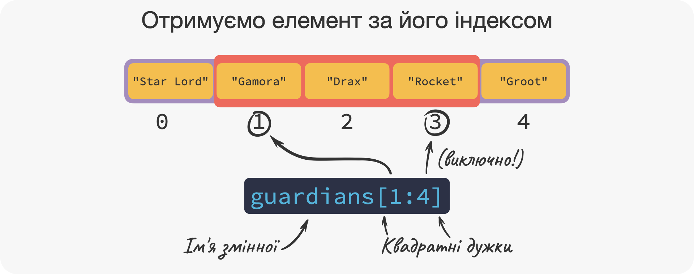
На цьому історія зі зрізами не закінчується – там є ще багато корисних трюків. Про них ви можете дізнатись у Додатку E. До речі, зрізи можна зрозуміти та опанувати виключно на практиці, тому не забивайте на вправи 🏋 у кінці глави!
7.4 ➕ Застосовуємо оператори
Для списків, так само як і для скалярних об’єктів, ми можемо використовувати оператори. Вони дещо відрізняються за своїм призначенням, але досить інтуїтивні.
7.4.1 Перевіряємо чи присутній об’єкт серед елементів списку
У практиці, ви дуже часто будете користуватися оператором in. Він дозволяє перевірити чи міститься заданий об’єкт серед елементів списку list. Наприклад, чи Iron Man є одним з вартових, або іншими словами, чи міститься елемент "Iron Man" у списку guardians? Якщо так, то вираз "Iron Man" in guardians поверне True (тобто істина) 👍, а якщо ні – False (тобто хибність) 👎. Давайте перевіримо:
"Iron Man" in guardians## FalseА що до "Gamora"?
"Gamora" in guardians## True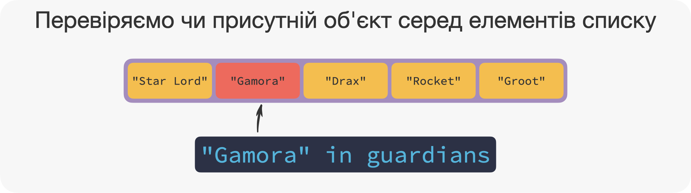
Якщо ж ми хочемо переконатися, що "Iron Man" не є в вартових, то замість in ми можемо написати not in. Цей вираз поверне True 👍, якщо "Iron Man" не є в вартових, або False 👎, якщо є:
"Iron Man" not in guardians## True7.4.2 З’єднуємо два списки
Їдемо далі. Ми хочемо отримати новий список, який на додачу до наших героїв буде також містити "Yondu" та "Mantis". Для цього, спершу, ми створемо новий список з "Yondu" та "Mantis", а потім додаємо його до існуючого guardians. Створюємо новий список:
guardians2 = ["Yondu", "Mantis"]А тепер додаємо наш новий список guardians2 до нашого першого списку guardians:
guardians + guardians2## ['Star Lord', 'Gamora', 'Drax', 'Rocket', 'Groot', 'Yondu', 'Mantis']У результаті оператора +, ми отримали новий список, елементи якого – це поєднання елементів першого та другого списків.
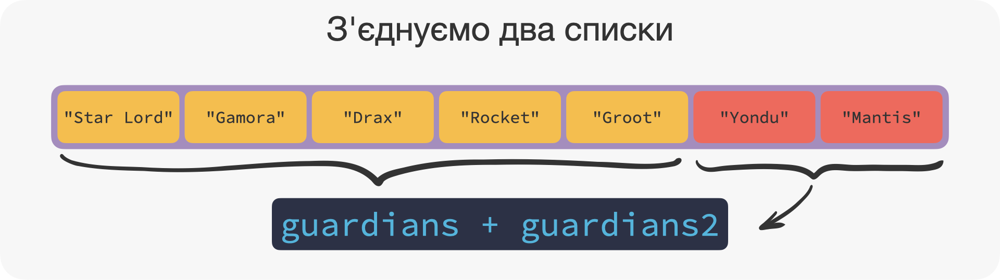
🎈 Увага: Список guardians не змінився! Як і не змінюється x у виразі x + 2. Вираз guardians + guardians2 тільки поверне новий список. Якщо ж ми хочемо змінити guardians, нам треба прописати ось таку інструкцію: guardians = guardians + guardians2.
7.4.3 Повторюємо список
Інший корисний оператор – це *. Цей оператор повторює список стільки разів, скільки зазначено у другому операнді, який до речі повинен бути числом типу int. Наступний вираз повторить список guardians два рази:
guardians2 * 2## ['Yondu', 'Mantis', 'Yondu', 'Mantis']Так само як і оператор +, цей оператор не змінює наш список, а лиш повертає новий.
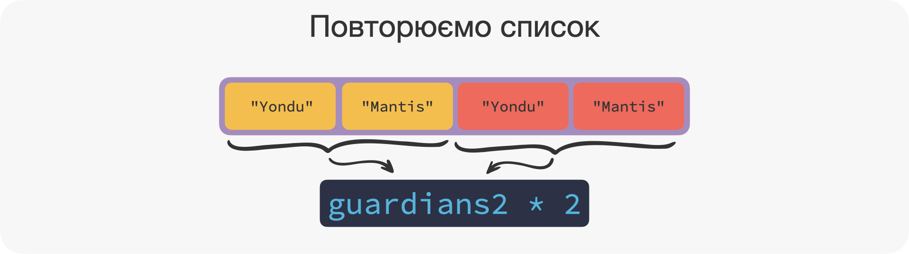
7.5 🔡 Застосовуємо корисні функції
Для того, щоб полічити кількість елементів у списку, ми використовуємо функцію len(). У нас наразі п’ять 🖐️ вартових, тому наступна інструкція поверне саме 5:
len(guardians)## 5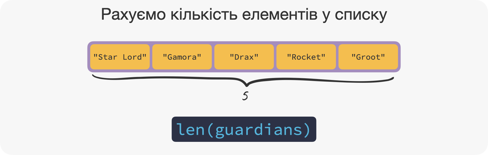
Для списків, елементи яких є числа, існують корисні функції min() та max(), які повертають мінімальний та максимальний елемент списку:
some_numbers = [-3, 10, 3, 4]
min(some_numbers)## -3max(some_numbers)## 10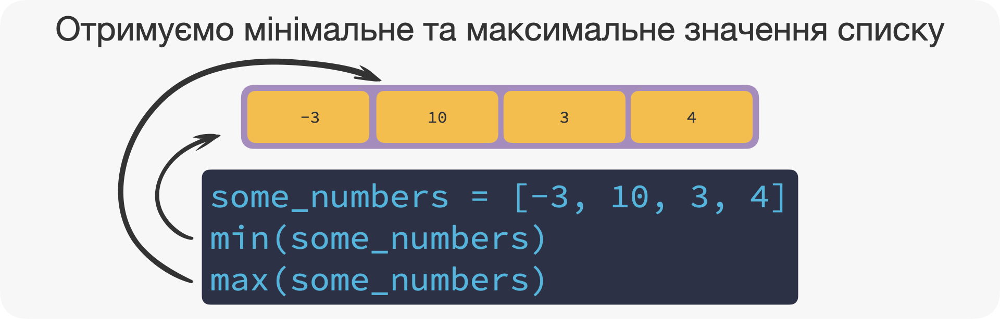
7.6 🪛 Застосовуємо корисні методи
Ми вже обговорювали чим методи відрізняються від функцій у главі 4. Нагадаємо, що методи – це фунцкії які прикріплені до об’єктів. У об’єктів типу list є дуже корисні методи, які ми зараз як раз і розглянемо.
🎈 Увага: Деякі методи будуть модифікувати та змінювати списки! Тому будьте обережні, якщо ви НЕ хочете, щоб ваш список змінився.
7.6.1 Додаємо елементи у список
Ми вже знаємо як приєднати список до списку за допомогою оператора +. А ось якщо нам потрібно додати елемент до нашого списку, то ми можемо використати метод .append(). Він додасть новий елемент у кінець списку. Давайте додамо Mantis до нашого списку:
guardians.append("Mantis")
guardians## ['Star Lord', 'Gamora', 'Drax', 'Rocket', 'Groot', 'Mantis']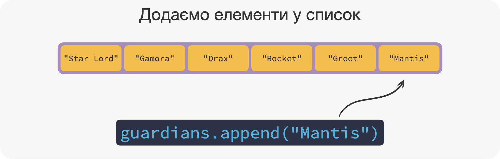
Якщо нас не влаштовує додавати новий елемент в кінець списку, ми можемо скористатися методом .insert(). Цей метод додає новий елемент, але ми повинні зазначити куди саме за допомогою першого аргументу. Давайте додамо Yondu першим елементом списку. Нагадуємо, індексація починається з нуля 0️⃣, тому перший – значить з індексом 0:
guardians.insert(0, "Yondu")
guardians## ['Yondu', 'Star Lord', 'Gamora', 'Drax', 'Rocket', 'Groot', 'Mantis']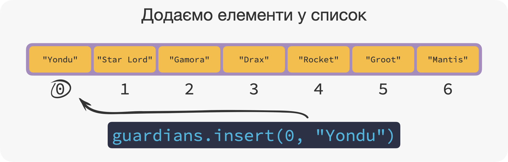
До речі, кожного разу як ви будете виконувати код який містить .append() або .insert(), ви будете додавати новий елемент. Тому будьте обережні та чітко знайте скільки разів ви виконували код. Тобто якщо ми випадково виконаємо код нагорі який містить guardians.append("Mantis") – то ми ще раз додамо "Mantis" у кінець нашого списку:
guardians.append("Mantis")
guardians## ['Yondu', 'Star Lord', 'Gamora', 'Drax', 'Rocket', 'Groot', 'Mantis', 'Mantis']7.6.2 Видаляємо елементи зі списку
Окей, але Yondu у певний момент не є членом команди та нам треба його видалити зі списку guardians. Для цього, ми будемо використовувати метод .remove(). Він видаляє усі елементи, які дорівнюють елементу зазначеному між дужками. Тобто якби ми зазначили "Mantis", то .remove() видалив би усі ❗️ елементи які дорівнюють "Mantis". Давайте спершу видалимо Yondu за допомогою .remove()
guardians.remove("Yondu")
guardians## ['Star Lord', 'Gamora', 'Drax', 'Rocket', 'Groot', 'Mantis', 'Mantis']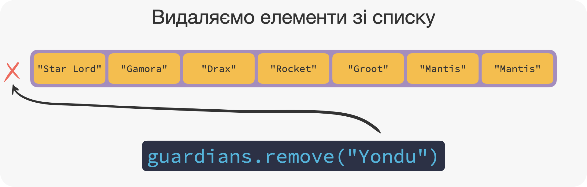
Окей, але у нас у команді все ще дві Mantis і ми хочемо видалити тільки один елемент. Якщо ми використаємо .remove(), то видалимо усі "Mantis". Добре що є метод .pop(), який видаляє елемент за його індексом. Давайте видалимо останній елемент. Який індекс відповідає останньому елементу? Скоріш за все, ви вже й не пам’ятаєте 🤔. Але ми можемо знайти цей індекс, порахувавши за допомогою функції len() кількість елементів, і потім відняти один (тому що індексація починається з нуля 0️⃣):
len(guardians)## 7Цей список має сім елементів, тому останній елемент має індекс 7 - 1 = 6:
guardians.pop(6)## 'Mantis'guardians## ['Star Lord', 'Gamora', 'Drax', 'Rocket', 'Groot', 'Mantis']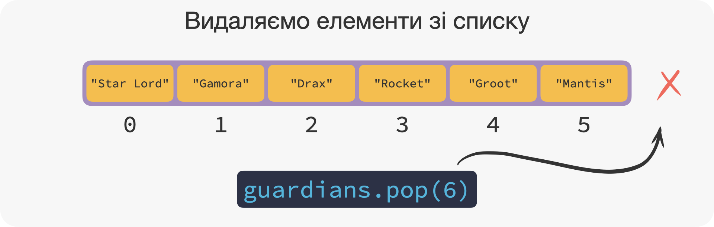
Є ще третій спосіб видалити елемент, використовуючи ключове слово del. Цей метод рідко використовується, тому ми його не розглядатимемо.
7.6.3 Змінюємо порядок елементів на зворотній
Іноді нам треба буде змінити порядок об’єктів, і для цього у нас є два важливих методи. Перший – .reverse(), який змінює порядок елементів на зворотній 🔄:
guardians## ['Star Lord', 'Gamora', 'Drax', 'Rocket', 'Groot', 'Mantis']guardians.reverse()
guardians## ['Mantis', 'Groot', 'Rocket', 'Drax', 'Gamora', 'Star Lord']Зверніть увагу не те, що тепер "Star Lord" став останнім елементом, 'Gamora' передостаннім, і так далі.
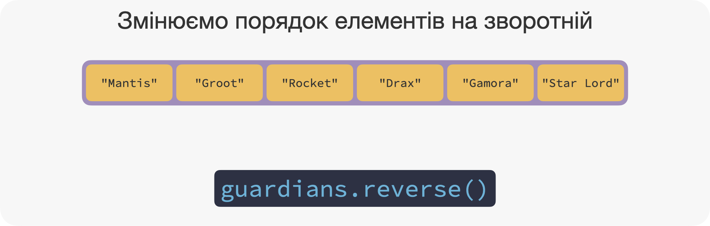
7.6.4 Сортуємо списки
Останній корисний метод, який ми розглянемо – .sort(). Він сортує список в лексикографічному порядку9 (якщо елементи є об’єктами типу str) або у порядку зростання (якщо елементи є числовими скалярами). Давайте відсортуємо наших героїв у списку guardians:
guardians.sort()
guardians## ['Drax', 'Gamora', 'Groot', 'Mantis', 'Rocket', 'Star Lord']"Drax" на першому місці, тому що D – це найперша літера абетки яка є в іменах героїв. На другому місці 'Gamora' та на третьому 'Groot'. Чому саме так? По-перше, ім’я обох героїв починається на "G", яка є другою літерою абетки, яка зустрічається в іменах. Щоб вирішити, хто буде на другій позиції – ми дивимось на другу літеру імен: у "Gamora" – це a, яка йде перед r у "Groot".
Тепер давайте швиденько створимо новий список з чисел:
weather = [24, 22, 19, 22]
weather## [24, 22, 19, 22]А тепер відсортуємо його:
weather.sort()
weather## [19, 22, 22, 24]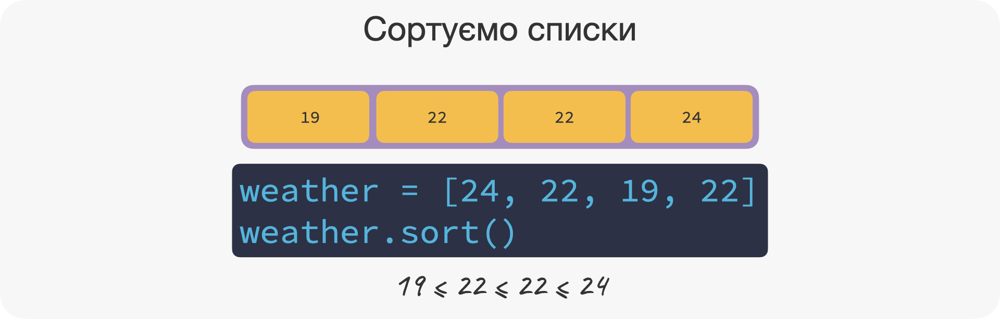
До речі, якщо ми спробуємо відсортувати елементи в списку star_lord, то ми отримаємо помилку. Це тому що .sort() працює зі списками, елементи якого можуть бути відсортовані. Ну от скажіть, хто більший: стрічка 'Peter Jason Quill' чи число 1976? Не знаєте? Ось і Python не знає теж 🤔:
star_lord.sort()## '<' not supported between instances of 'int' and 'str'Так! Ти – молодець 🤩 Якщо ти читаєш ці рядки, це означає що ти вже опанував одину з трьох найважливіших штук у програмуванні. Ти вже можеш створювати списки, витягати, додавати, видаляти та змінювати їх елементи, та багато чого іншого. А бонусом – ти вже вмієш взаємодіяти з ще одною структурою даних, яку ми розглянемо в наступній главі.
🤸 Вправи
[4, 5, 10, 4, 1]?duration?x, після виконання x = [12]?flowers = ["lily", "rose", "daisy", "tulip"]
clothes = ["t-shirt", "pants", "tie", "suit", "dress"]
clothes[5]
Лексикографічний порядок дуже схожий на алфавітний порядок, який використовується в словниках.↩︎